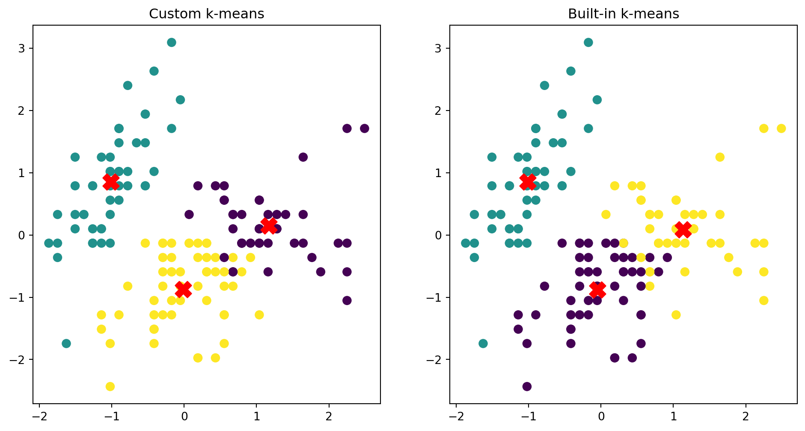

Code
import numpy as np
import matplotlib.pyplot as plt
from sklearn.preprocessing import StandardScaler
from sklearn.cluster import KMeans
import pandas as pd
file_path = 'data/iris.csv'
iris_data = pd.read_csv(file_path)
def initialize_centroids(X, k):
# Randomly select k unique data points as initial centroids
indices = np.random.choice(X.shape[0], k, replace=False)
return X[indices]
def assign_clusters(X, centroids):
# Compute the distance between each data point and the centroids
distances = np.linalg.norm(X[:, np.newaxis] - centroids, axis=2)
# Assign each data point to the nearest centroid
return np.argmin(distances, axis=1)
def update_centroids(X, labels, k):
# Compute the mean of the data points in each cluster
new_centroids = np.array([X[labels == i].mean(axis=0) for i in range(k)])
return new_centroids
def kmeans(X, k, max_iters=100, tol=1e-4):
centroids = initialize_centroids(X, k)
for _ in range(max_iters):
labels = assign_clusters(X, centroids)
new_centroids = update_centroids(X, labels, k)
# Check for convergence
if np.all(np.linalg.norm(new_centroids - centroids, axis=1) < tol):
break
centroids = new_centroids
return centroids, labels
# Extract features from the iris dataset
X = iris_data.iloc[:, :-1].values
# Standardize the data
scaler = StandardScaler()
X_scaled = scaler.fit_transform(X)
# Function to plot clusters
def plot_clusters(X, labels, centroids, title):
plt.scatter(X[:, 0], X[:, 1], c=labels, s=50, cmap='viridis')
plt.scatter(centroids[:, 0], centroids[:, 1], s=200, c='red', marker='X')
plt.title(title)
# Apply the custom k-means algorithm
k = 3
custom_centroids, custom_labels = kmeans(X_scaled, k)
# Plot the results of the custom k-means algorithm
plt.figure(figsize=(12, 6))
plt.subplot(1, 2, 1)
plot_clusters(X_scaled, custom_labels, custom_centroids, 'Custom k-means')
# Apply the built-in k-means algorithm for comparison
kmeans_model = KMeans(n_clusters=k, random_state=0)
kmeans_model.fit(X_scaled)
builtin_centroids = kmeans_model.cluster_centers_
builtin_labels = kmeans_model.labels_
# Plot the results of the built-in k-means algorithm
plt.subplot(1, 2, 2)
plot_clusters(X_scaled, builtin_labels, builtin_centroids, 'Built-in k-means')
plt.show()